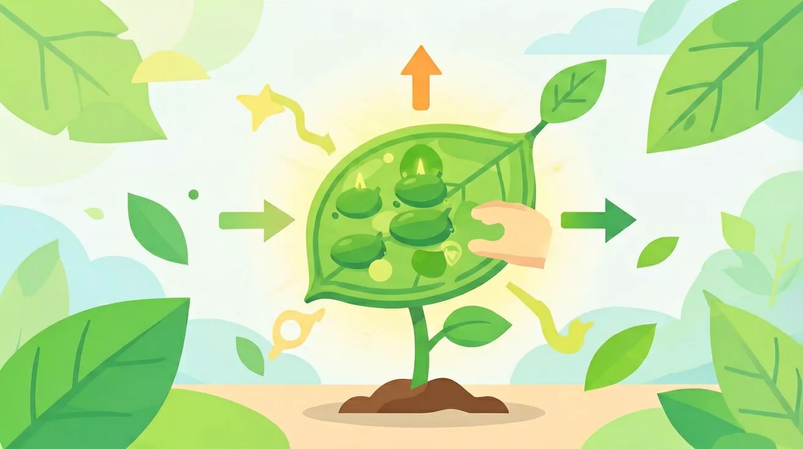

你知道植物需要水和阳光才能生长 · 但不知道植物是怎么自己[做饭]的 · 光合作用就是植物用阳光把水和二氧化碳变成食物（糖）的过程
你已经学过植物的一生（种子到果实），具备继续探索的底座；在日常生活中，你也早就接触过与「植物的光合作用」相关的现象。
但当问题换了一个情境出现——需要你解释原因、做出判断或解决实际任务时，仅凭零散的旧知识就很容易卡住。
所以本课用一个贯穿的情境任务，带你把「植物的光合作用」拆成可操作的步骤：先看懂它，再动手试，最后用练习和迁移把它变成自己的能力。
说出光合作用的原料和产物
解释为什么阳光对植物生长重要
判断影响光合作用的因素
光合作用的产物有哪些？
已知：你知道植物需要水和阳光才能生长
问题：但不知道植物是怎么自己[做饭]的
解法：光合作用就是植物用阳光把水和二氧化碳变成食物（糖）的过程
👀 看见它：在生活的真实场景里，「植物的光合作用」长什么样？先找到一两个能摸得着的例子。
🧩 拆开它：它由哪几个关键部分组成？每个部分起什么作用、背后的原理是什么？
🚀 迁移它：换一个情境，这个结论还成立吗？试着解释一个课本之外的新例子。
把你对「植物的光合作用」的理解画下来：标注关键词、画出结构关系，再对照讲解检查。
把植物放在完全黑暗处，光合作用会？
有疑问？点击提问！
光合作用是绿色植物利用光能将二氧化碳和水转化为有机物（如葡萄糖）并释放氧气的过程。这一过程主要发生在植物的叶绿体中，是地球上最重要的化学反应之一。例如，当阳光照射到树叶上时，叶绿素吸收光能，驱动整个光合作用过程。我们可以通过一个简单的实验观察到光合作用的产物：将水生植物放入水中，在阳光下会产生气泡，这些气泡就是氧气。光合作用不仅为植物自身提供能量，还为整个地球的生态系统提供氧气和食物来源。
光合作用主要在植物的叶绿体中进行。叶绿体是一种含有叶绿素的细胞器，主要分布在植物的叶片中。例如，我们常见的菠菜叶片在显微镜下可以看到许多绿色的颗粒，这些就是叶绿体。叶绿体的结构包括外膜、内膜和类囊体膜，类囊体膜上含有光合色素，能够捕获光能。叶片的扁平形状和大量气孔的设计，都是为了最大限度地吸收阳光和二氧化碳。有趣的是，仙人掌的茎也能进行光合作用，这是因为它们的叶片退化为刺，光合作用的功能由绿色的茎承担。
光合作用需要三种主要原料：二氧化碳、水和光能。二氧化碳通过叶片的气孔进入植物体内，水则通过根系吸收并由导管运输到叶片。例如，在干旱季节，植物会关闭部分气孔以减少水分流失，这也会影响二氧化碳的吸收。光能主要来自太阳，不同波长的光对光合作用的影响不同，叶绿素主要吸收红光和蓝紫光。我们可以做一个实验：用不同颜色的滤光片覆盖植物，观察其生长状况，会发现红光和蓝光下的植物生长最好。
光合作用的主要产物是有机物（如葡萄糖）和氧气。葡萄糖是植物生长和发育的能量来源，多余的葡萄糖会转化为淀粉储存起来。例如，我们吃的土豆中的淀粉就是光合作用的产物。氧气则通过气孔释放到大气中，供其他生物呼吸。我们可以通过一个简单的实验验证氧气的产生：将新鲜的水生植物放入倒扣的漏斗下，用试管收集产生的气体，将带火星的木条伸入试管，木条会复燃，证明产生了氧气。
先独立作答，再点选项查看对错与错因。
下列哪项是植物进行光合作用的必要条件？
植物进行光合作用的主要场所是？
下列哪项是光合作用的产物？
光合作用的化学方程式可以表示为：二氧化碳 + 水 → ____ + 氧气
答案：葡萄糖
光合作用将二氧化碳和水转化为葡萄糖和氧气
植物通过____吸收阳光中的能量
答案：叶绿素
叶绿素是植物进行光合作用的关键色素
下列哪项最能说明光合作用对植物生长的重要性？
设计实验探究不同光照强度对植物生长的影响